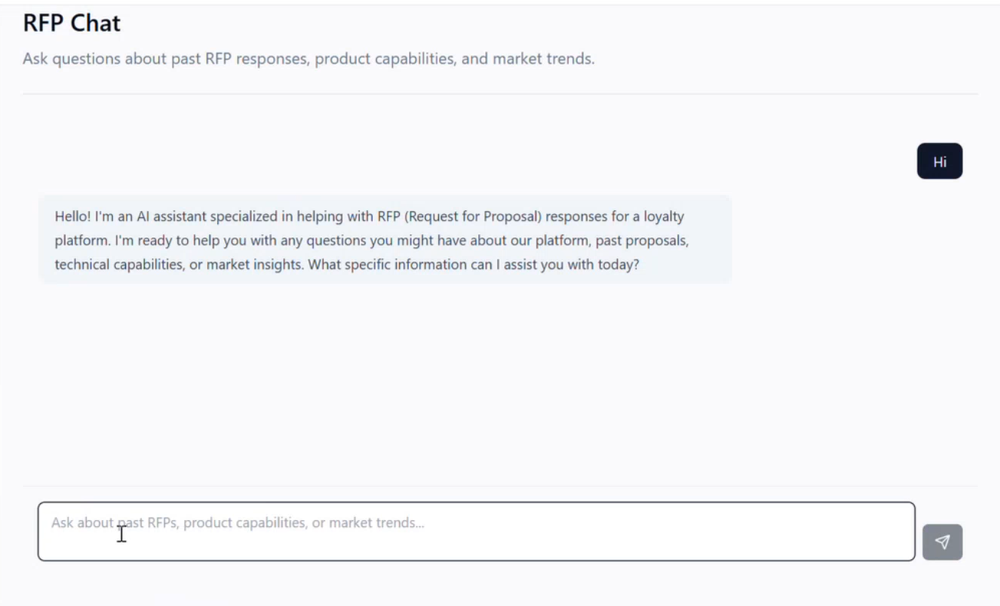
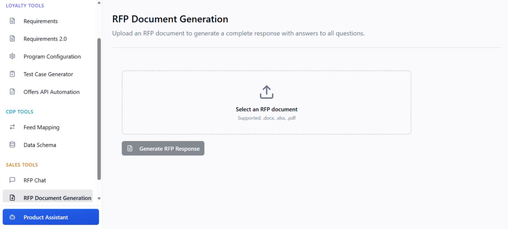
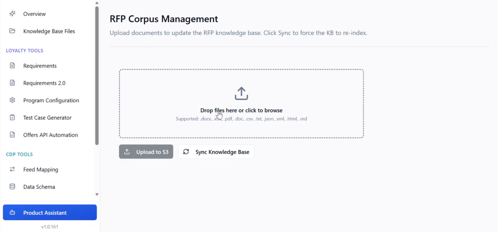

Barathwaj Maadhavan
Build. Automate. Simplify.
RFP Automation Agent
Forward Deployed Engineer – built from the ground up with sales and client engagement teams.

Overview
As the sole Forward Deployed Engineer (FDE) embedded with the sales and client engagement teams, I designed and built the RFP Automation Agent from the ground up. The goal was to eliminate the weeks‑long, cross‑functional effort required to generate accurate, competitive proposals. Working directly with the people who use the tool every day, I owned the entire lifecycle – from requirements gathering and architecture to deployment and iteration.
My Role
"Unofficial" Forward Deployed Engineer (FDE) · Epsilon 2025-2026
- Sole engineer on the project – responsible for end‑to‑end development.
- Embedded with sales and client engagement teams to understand their workflow and pain points.
- Owned the full stack: front‑end UI, backend orchestration, LLM integration, and cloud infrastructure.
The Challenge
Proposal generation was a slow, manual process requiring input from sales, product, legal, and technical teams. Turnaround times averaged 2–3 weeks, and consistency varied across responses. The sales team needed a tool that could generate accurate, source‑cited responses in hours – not weeks.
What I Built
I architected a multi‑source retrieval and generation system that:
- Ingests historical RFPs and internal knowledge bases.
- Queries live product data via an MCP server.
- Pulls external market intelligence from the web.
- Generates responses with confidence scores and source citations – so users can trust the output.
Key Features (Built from Scratch)
Chat Interface
Allows sales teams to engage in real-time Q&A for quick client queries, providing not only the generated response but also the confidence score and the specific knowledge sources cited.

Bulk Document Generation
This feature takes an entire RFP document as an upload, systematically extracts every question, and outputs a structured Excel file containing the original questions, generated responses, and associated confidence scores for each entry.

User-Friendly Knowledge Management
To eliminate backend manual processes, I created a dedicated UI where users can upload new contextual documents and trigger an S3 synchronization to the knowledge base with a single click, ensuring the agent remains updated without technical intervention.
Results & Impact
- Weeks → hours – reduced proposal turnaround by 90%.
- 80% accuracy on first-draft responses.
- Deployed and actively used by client engagement and sales teams.
- Shifted focus from repetitive drafting to high‑value, creative strategy.
Key Learnings
Working as the sole Forward Deployed Engineer embedded with non‑technical teams taught me to:
- Translate business needs into technical solutions quickly.
- Build with the user in the room – iterate fast based on real‑time feedback.
- Own the full stack – from UI to infrastructure – and make trade‑offs that prioritise user value.